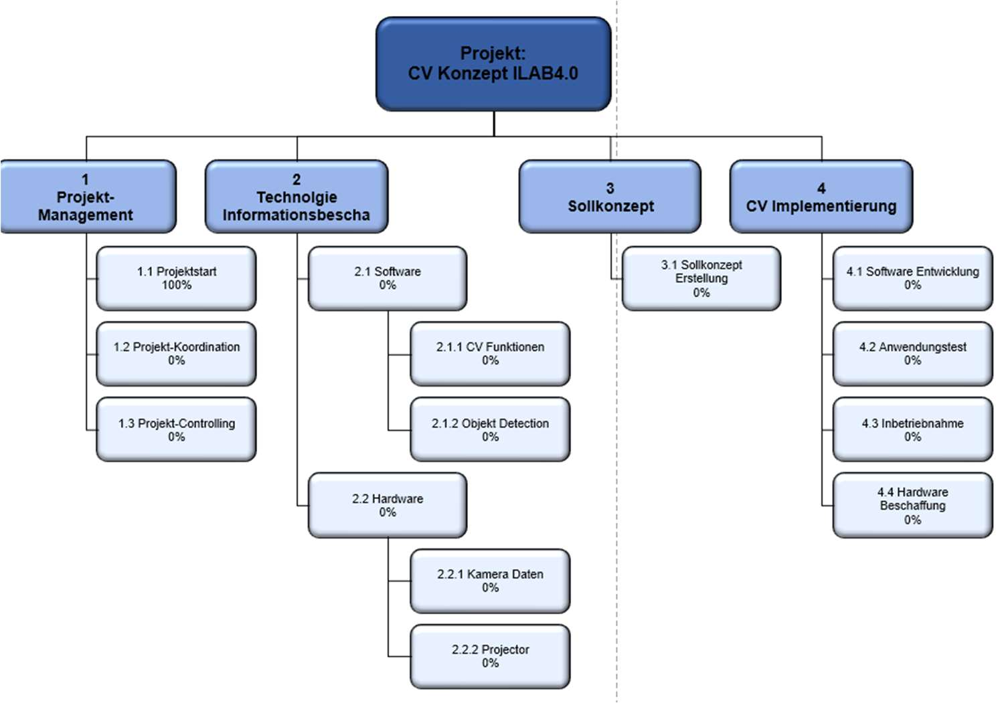
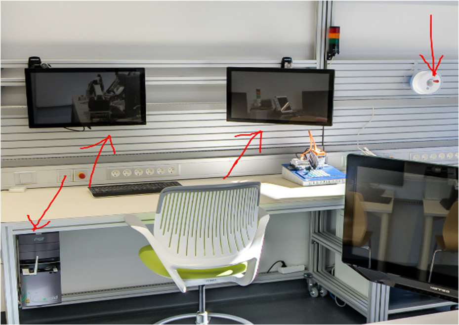
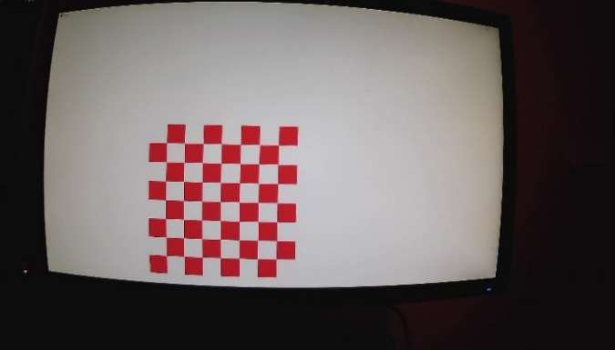
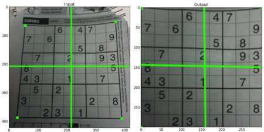
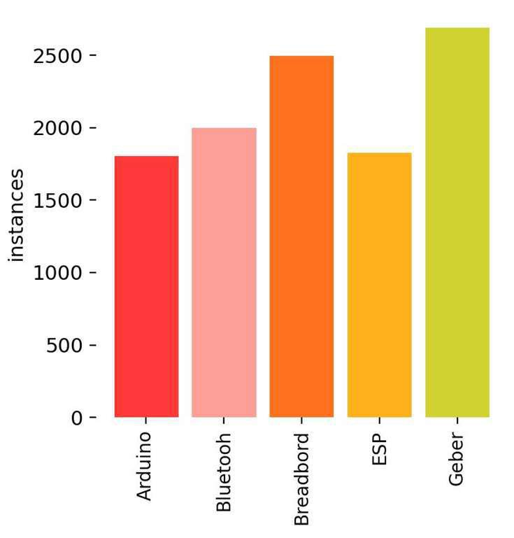
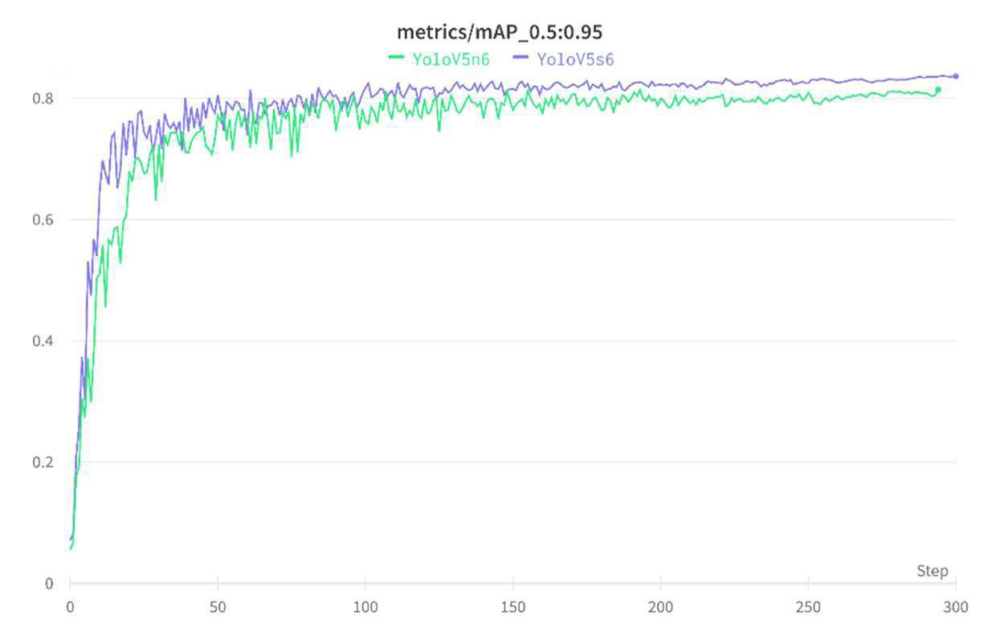
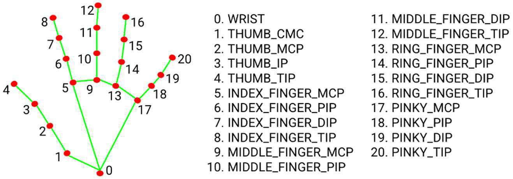
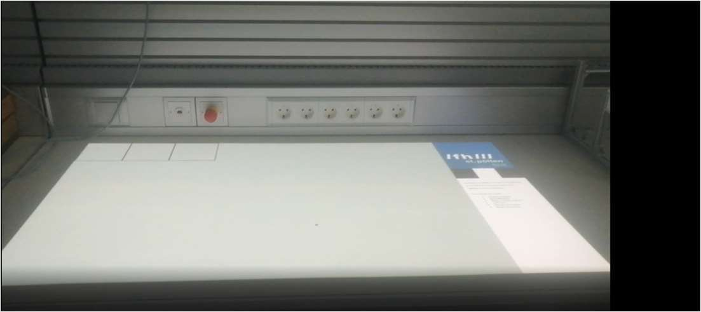

Projektmanagement
Für die Strukturierung und zeitliche Planung des Projekts wurden ein Projektstrukturplan (PSP) sowie ein detailliertes Gantt-Chart erstellt. Dies ermöglichte die parallele Bearbeitung von Bildmanipulation, Objektdetektion und Kommunikation.


Ziel des Projekts
Im Industrie 4.0 Lab sollten die Möglichkeiten von Computer Vision möglichst anschaulich demonstriert werden. Die Idee: ein Assistenzsystem, das eine Person durch eine Baugruppenmontage begleitet. Eine Kamera analysiert den Arbeitsplatz, ein Projektor blendet Arbeitsschritte, Bauteilinformationen und farbige Markierungen direkt auf der Arbeitsfläche ein.

Kamera-Projektor-Kalibrierung
Die größte Herausforderung war, Kamera und Projektor exakt aufeinander abzustimmen. Ein erster Ansatz mit farbigen Markierungen (Blob-Detection) war zu anfällig für Helligkeit, Lichtfarbe und Kamerawinkel und wurde verworfen.
Die Lösung war eine eigene Chessboard-Detection:
- Ein Algorithmus berechnet die optimale Feldgröße des Schachbretts für die Projektorauflösung (minimaler Pixelfehler, gleichmäßige Messpunktverteilung).
- Das projizierte, rotierende Schachbrett dient zur automatischen Entzerrung der Kamera.
- Über eine Perspektiven-Transformation und einen Binärbildabgleich wird die Pixelverschiebung ermittelt und in X- und Y-Richtung automatisch korrigiert.


Objekterkennung mit YOLOv5
Für die Erkennung der Bauteile (Arduino, Bluetooth-Modul, Breadboard, ESP, Drehgeber) wurde YOLOv5 trainiert. Nach rund 100 händisch in Roboflow annotierten Aufnahmen übernahm ein eigenes Skript mit dem ersten trainierten Modell die Annotation automatisch – so wuchs das Datenset auf mehrere tausend Objekte. Der Tracking-Algorithmus SORT, ergänzt um eine eigene Glättung, verhindert das „Zittern“ der erkannten Positionen.


Gestensteuerung, Node-RED & Softwarearchitektur
- Gestensteuerung: Mit MediaPipe wird die Hand erkannt; virtuelle, projizierte Buttons lassen sich mit dem Zeigefinger auslösen.
- Node-RED Dashboard: Externe Kontrolle und Steuerung der Arbeitsschritte, Kommunikation über UDP im JSON-Format.
- Performance: Bildverarbeitung, Kommunikation, Gestensteuerung und Objekterkennung laufen als vier parallele Prozesse auf eigenen CPU-Kernen, verbunden über Pipes.

Ergebnis
Entstanden ist ein funktionsfähiges Werkerassistenzsystem, das in acht Schritten durch den Aufbau einer LED-Steuerung mit Arduino führt – von der Aufgabenbeschreibung über die Platzierung der Bauteile bis zur Verdrahtung. Benötigte Bauteile werden erkannt und auf der Arbeitsfläche hervorgehoben. Das System wurde im Mai 2022 einsatzbereit übergeben und für die Demonstration bei der Langen Nacht der Forschung eingesetzt.
